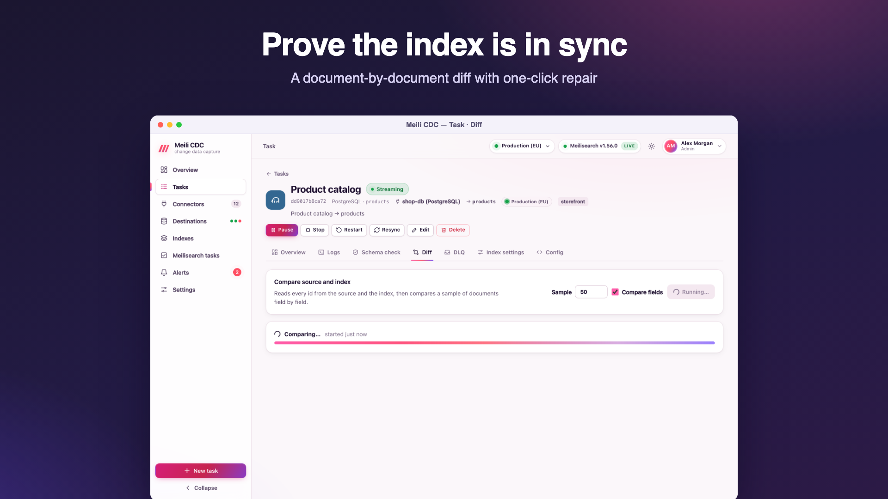
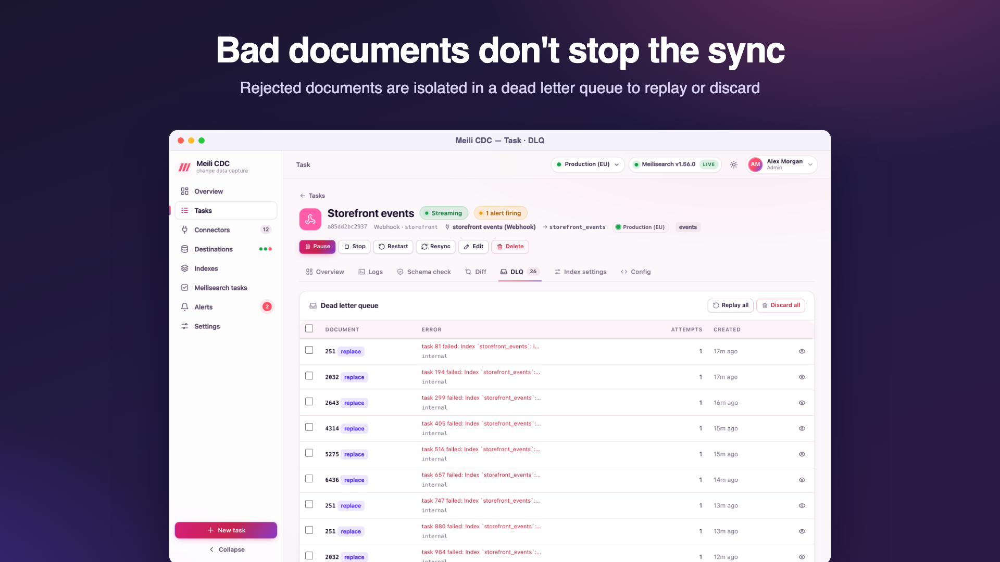

Data quality
Three tools tell you whether an index really matches its source: the schema check, the document diff (with repair), and the dead letter queue of documents Meilisearch refused.
Schema check
The Schema check tab of a task (any role) compares three things: the source's columns, the fields actually present in the index (with their coverage, the share of documents that have the field), and the index settings. Each field shows where it comes from, its source type, whether it is in the source and in the index, and which settings reference it (searchable, displayed, filterable, sortable, distinct, ranking).

Issues it reports:
| Level | Issue |
|---|---|
| error | index primary key is "sku" but the task writes "id" |
| error | the source has no primary key; set mapping.primaryKey |
| error | settings reference filterable but no document can contain it (a setting names a field the mapping never produces) |
| warning | field exists in the index but not in the source (dropped or renamed column?); a zero-downtime resync removes it |
| warning | date stored as RFC3339 text cannot be range filtered or sorted chronologically; set mapping.timeFormat to unix |
| warning | some documents miss the primary key field |
| info | column is mapped but no indexed document has it yet |
| info | binary column is indexed as base64 text; consider excluding it |
| info | add _geo to filterable/sortable attributes to use geo search |
| info | the index does not exist yet; it is created when the task starts |
Diff and repair
The Diff tab (moderator to run) compares the source and the index document by document:
- Source pass. Reads every row with the task's own snapshot query, applies the mapping, and keeps a hash of each document.
- Index pass. Pages through every document in the index and compares hashes.
- Detail pass. Re-reads the source for sample documents to show which fields differ, and for repairs.
The report counts documents in the source and the index and the missing (in the source, not in the index), extra (in the index, not in the source) and mismatched (different content) ones, with up to 50 sample ids per category (sampleLimit) and, for mismatches, the differing fields with both values. Floats are compared to 15 significant digits, because Meilisearch does not keep the last digit of some floats; without this, documents that are in sync would never compare equal.
A diff runs in the background (at most one per task, for at most two hours) and the report is kept until the next run. It reads the whole table, so schedule large diffs outside peak hours. Memory grows with the number of documents (one hash per document).
Repair
Repair runs the diff again and fixes the index while it goes, for the categories you choose: re-send missing and mismatched documents, and delete extra ones. Deleting extras is off by default: check the sample ids first, in case another task writes to the same index. Documents Meilisearch rejects during a repair go to the dead letter queue. The log records repair: 12 upserted, 3 deleted, 0 rejected.
# API: run a diff, then read the report
curl -X POST -H "Authorization: Bearer $TOKEN" -H 'Content-Type: application/json' \
-d '{"sampleLimit": 50, "compareFields": true}' "$CDC/api/v1/tasks/products/diff"
curl -H "Authorization: Bearer $TOKEN" "$CDC/api/v1/tasks/products/diff"
# Repair missing and mismatched documents (runs in the background as well)
curl -X POST -H "Authorization: Bearer $TOKEN" -H 'Content-Type: application/json' \
-d '{"missing": true, "mismatched": true, "extra": false}' "$CDC/api/v1/tasks/products/diff/repair"Diff versus resync
A repair fixes a handful of documents without rebuilding anything. When most of the index is wrong (after a mapping change, say), a zero-downtime Resync is faster and cleaner.
Dead letter queue
When Meilisearch refuses a batch because of a document's content, the writer splits the batch in halves until it isolates the offending documents. Everything else is applied; the offenders are stored in the task's dead letter queue (DLQ) with the error, the Meilisearch error code and the number of attempts. The pipeline keeps going.

Why documents land there
| Operation | Typical cause |
|---|---|
upsert, replace, delete | Meilisearch rejected the document: an invalid or missing document id, a malformed _geo or GeoJSON field, the per-document field limit, an invalid _vectors value, a malformed payload, or a single document too large for the payload limit. |
transform | The row could not become a document at all, usually because a primary key column has no value (row has no value for a primary key column "id"). The original row is stored. |
Replay and discard
- Replay (moderator) sends the selected entries (or all) to Meilisearch again, after you fixed the cause (for example by adjusting index settings or embedders). Entries that succeed leave the queue; the others stay with their attempt count increased.
transformentries cannot be replayed: fix the source row or the mapping, and the next change of that row is applied normally. - Discard (moderator) deletes the selected entries (or all).
Dead letters are kept in the state store until replayed, discarded, the task is deleted, or purged with meilisearch-cdc admin purge dlq. The cdc_dlq_total metric and the dlq alert rule tell you when new ones arrive.